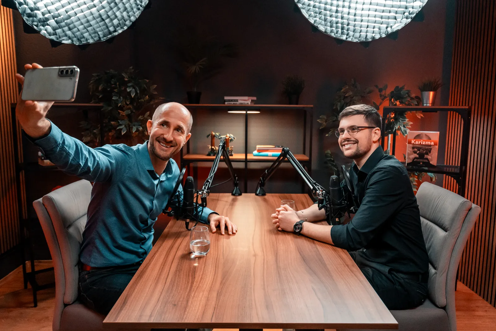
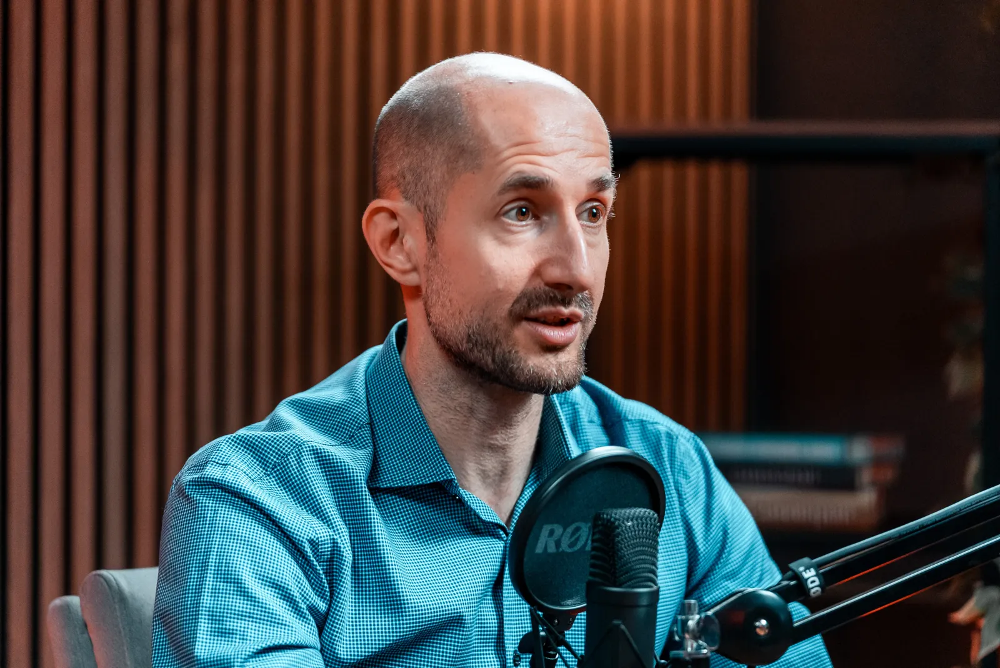
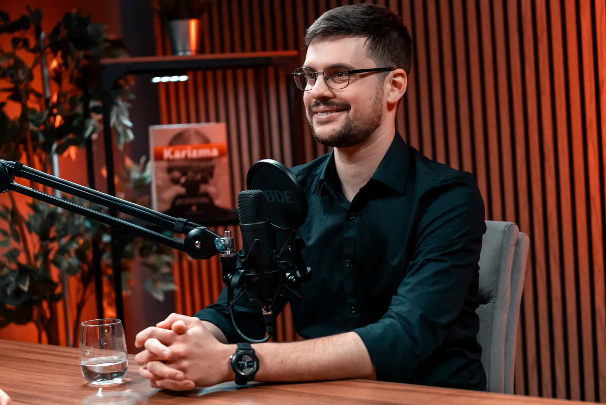

Kaltenecker Kristóf, a Nova Produkciós Iroda alapítója Bolya Imrével beszélget arról, miért a bizalom lett az új olaj, és hogyan épít egy cégvezető olyan személyes márkát, amit évekig bír fenntartani.

Miről szól a beszélgetés
Kristóf története 2018-ban, egy pécsi kollégiumi szobában indul. Egy kétségbeesett anyuka hívta, hogy a másfél éves, SMA-val élő kisfiának, Zentének 700 millió forintos gyógyszerre van szüksége, méghozzá a második születésnapja előtt. A videó megosztása után két héttel meglett a pénz. Innen jön Kristóf alaptétele: a figyelem már régóta valuta, de az igazán szűkös erőforrás ma a bizalom. A cégvezetőnek ezért éri meg személyes márkát építeni. Aki szakértőként és emberként hitelesen szólal meg, azt hívják előadni, vele rövidebb az út az üzletkötésig, és a márkája felnagyítja azt, ami amúgy is benne van, a bőkezűséget éppúgy, mint a gyors haszon vágyát.

A második felében Kristóf a kezdők gátjait bontja le. Először egyetlen mondatot kell leírni arról, mit gondoljon rólunk a közönség, aztán három tartalompillért választani: a saját élettapasztalatot, azt, amit szívesen csinálunk, és a közönség mai elakadásait. Az imposztorérzésre is van gyakorlata: ha egy tízes skálán hatosnak tartod magad, a közönséged nulla és egy között áll, nekik bőven tudsz újat mondani. Rögzíts egy ötperces videót, aludj rá, majd hallgasd csak a hangot, nézd némán a testbeszédet, és olvasd el a leiratot. Az AI szerinte öt-nyolc hónapon belül felhőréteget von a kezdők és a bejáratott márkák közé. A Nova ügyfelei közben átlagosan három-négy évig maradnak, míg a piacon három-négy hónap a szokás.

„Az új olaj, amiből egyre kevesebb van, az a figyelem után az a bizalom.”
Kaltenecker Kristóf
„Az, hogy építünk egy márkát, és annak a középpontjában mi állunk, az egyik legjobb önismereti út, amin végigmehetsz.”
Kaltenecker Kristóf
„Abban a pillanatban, hogy minden információ a rendelkezésemre áll, és akkor hozom meg a döntést, elkéstem.”
Kaltenecker Kristóf

Ha szeretnél még mélyebben belelátni abba, hogyan gondolkodom a jövőről, ez a beszélgetés erre való. Az epizódban nem csak a Nova víziójáról mesélek, hanem azokról a döntésekről, kételyekről és tapasztalatokról is, amelyek idáig vezettek.
Kulisszatitok: Imivel egy networking eseményen ismerkedtünk meg. Ő éppen egy panelbeszélgetést hallgatott, én mellé ültem, és a podcastekről kezdtünk beszélgetni. Kiderült, hogy neki saját műsora van, mi pedig addigra nagyjából két-háromezer podcastepizódot gyártottunk le az ügyfeleinknek. Ebből a szinte véletlen beszélgetésből lett a mai stratégiai partnerségünk, és ez az epizód.
A felvétel még az előző stúdiónkban készült, egy-két technikai malőrrel. De elkészült, és pont ez a lényeg.